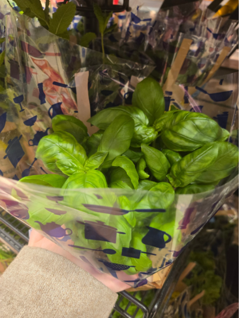
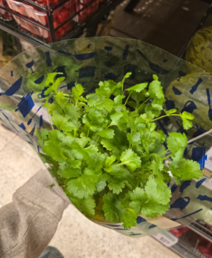
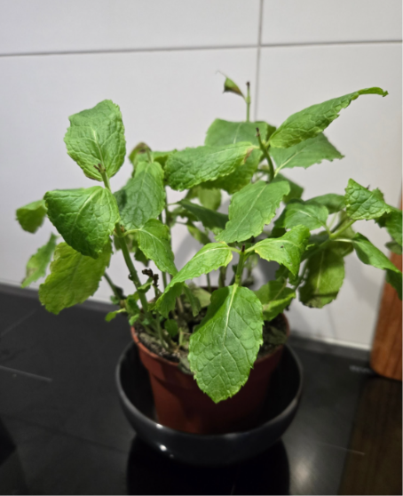
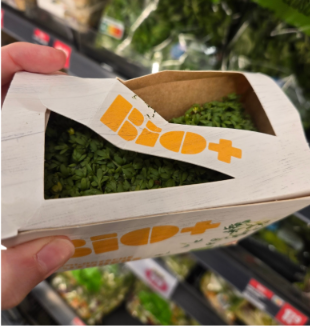

1. Basil Most importantly, basil needs plenty of bright light, so place it near a window where it can receive at least 6 hours of direct light. Keep the soil constantly moist and water it when the top of the soil feels dry to the touch. Basil benefits from humidity so spraying leaves with water also helps. Ensure good drainage to prevent root rot. Basil thrives in warm temperatures so keep it in mind when you pick location for it, don’t place it near air conditioning. What dishes benefit from having basil? Pesto, pizza, salad, pasta... 
2. Coriander It’s important to know that coriander grows best in cool temperature. This herb grows quickly and prefers cooler conditions to prevent it from bolting prematurely, so it’s best to keep it in a well ventilated area. Coriander loves sunlight so place it in a spot where it can get plenty of indirect sunlight throughout the day. Keep the soil constantly moist and water it when the top of the soil feels dry to the touch. Coriander benefits from humidity so spraying leaves with water also helps. Ensure good drainage to prevent root rot. What dishes benefit from having coriander? Garlic potatoes, Tandoori chicken salad, falafel... 
3. Mint Mint is known as one of the easiest herbs to keep, this plant is more tolerant of beginner mistakes than almost any other herb. Aim for at least 4-6 hours of bright indirect light every day, with an hour or two of direct sunlight if possible. When it comes to watering, mint prefers to have the soil consistently moist, so it’s best to keep the surface damp to the touch at all times. What dishes benefit from having mint? Salads, cocktails, tea, lemonade, 
4. Cress Cress is known for being easy to grow, that’s why it’s so easy to grow among kids and beginners, and the results are quick and easy. Cress can be grown all year round on your windowsill, it grows best in moist, well drained soil. Water consistently. Cress grows well in both partial shade and full sun, but providing a bit of sunlight will encourage quicker growth and better flavor. A sunny windowsill or a spot in your garden that receives a few hours of direct sunlight each day is ideal. What dishes benefit from having cress? Sandwiches, wraps, salad, pasta 
 Contact
Contact